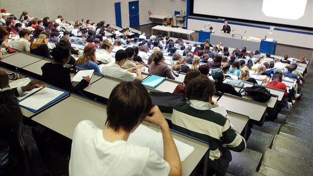
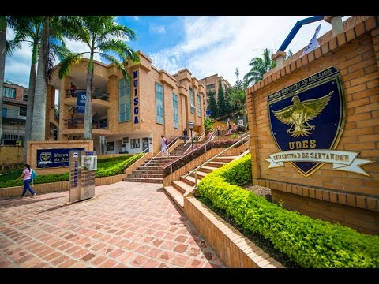

Educacion Superior
Inicio
La educación superior es aquella que contempla la última fase del proceso de aprendizaje académico es decir, aquella que viene luego de la etapa secundaria. Es impartida en las universidades, institutos superiores o academia de formación técnica. La enseñanza que ofrece la educación superior es a nivel profesional.

Se diferencia entre los estudios de pregrado y posgrado, dependiendo del sistema profesional y grados académicos. El requisito básico para ingresar a un instituto de educación superior es tener entre 15 y 20 años, ya que a esta edad se supone que se ha concluido la educación primaria y secundaria, otro de los requisitos para poder cursar estudios superiores.
La educación superior le brinda al estudiante la oportunidad de capacitarse académicamente para luego poder entrar al campo laboral. Es por esto que en ella se estudian un conjunto de asignaturas consideradas como obligatorias y otras consideradas optativas, con el fin de ejercer una profesión que esté asociado con ellas. Es importante que la persona antes de cursar estudios superiores tenga muy claro su vocación profesional y cómo se encuentra el mercado laboral en relación con la carrera que desea cursar.
